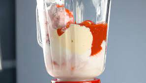
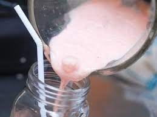
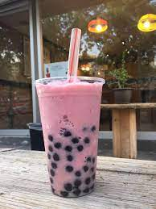

Ingredientes
- bolas de helado
- fresa picada
- saborizante de fresa
- leche condensada
- 1 lata de leche evaporada
MALTEADA

DESCUBRE LA RECETA
BEBIDA ES INSPIRADA EN ROSITA FRESITA; UN PERSONAJE QUE SALIÓ EN EL 86 ÚNICAMENTE PARA INVITACIONES, Y ASÍ CON EL PASO DEL TIEMPO SE HIZO PERSONAJE DE CARICATURA
1. En una licuadora se agrega las bolas de helado, fresa picada, 1/4 de leche condensada, saborizante de fresa, 1 lata de leche evaporada
2. Mezcla todos los ingredientes por 3 minutos
3. Vierte la bebida en un vaso y agrega las bolitas de tapioca
4. Decora con crema batida, jarabe de fresa y chispas de fresa